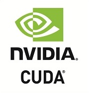

Accelerate Python Functions
Just-in-time compilation directly from Python
Numba translates Python functions to optimized machine code at runtime using the industry-standard LLVM compiler library. Numba-compiled numerical algorithms in Python can approach the speeds of equivalent C or FORTRAN code.
You don't need to replace the Python interpreter, run a separate compilation step, or event have a C/C++ compiler installed. Just apply one of the Numba decorators to your Python function, and Numba does the rest.
Learn More » Try Now »from numba import jit
import random
@jit(nopython=True)
def monte_carlo_pi(nsamples):
acc = 0
for i in range(nsamples):
x = random.random()
y = random.random()
if (x**2 + y**2) < 1.0:
acc += 1
return 4.0 * acc / nsamplesBuilt for Scientific Computing
Ideal for Numerical Algorithms
Numba is designed to be used with NumPy arrays and functions. Numba generates specialized code for different array data types and layouts for optimal performance. Special decorators can create universal functions that broadcast over NumPy arrays just like NumPy functions do.
Numba also works great with Jupyter notebooks for interactive computing, and distributed execution frameworks, like Dask and Spark.
Learn More » Try Now »@numba.jit(nopython=True, parallel=True)
def logistic_regression(Y, X, w, iterations):
for i in range(iterations):
w -= np.dot(((1.0 /
(1.0 + np.exp(-Y * np.dot(X, w)))
- 1.0) * Y), X)
return wParallelize Your Algorithms
Use your whole computer
Numba offers a range of options for parallelizing your code for CPUs and GPUs, often with only minor code changes.
Simplified Threading
@jit(nopython=True, parallel=True)
def simulator(out):
# iterate loop in parallel
for i in prange(out.shape[0]):
out[i] = run_sim()Numba can automatically execute NumPy array expressions on multiple CPU cores and makes it easy to write parallel loops.
SIMD Vectorization
LBB0_8:
vmovups (%rax,%rdx,4), %ymm0
vmovups (%rcx,%rdx,4), %ymm1
vsubps %ymm1, %ymm0, %ymm2
vaddps %ymm2, %ymm2, %ymm2Numba can automatically translate some loops into vector instructions for 2-4x speed improvements. Numba adapts to your CPU capabilities, whether your CPU supports SSE, AVX, or AVX-512.
GPU Acceleration
With support for both NVIDIA's CUDA and AMD's ROCm drivers, Numba lets you write parallel GPU algorithms entirely from Python.
Portable Compilation
Works on all the platforms you do
Ship high performance Python applications without the headache of binary compilation and packaging. Your source code remains pure Python while Numba handles the compilation at runtime. We test Numba continuously in more than 200 different platform configurations.
Numba supports Intel and AMD x86, POWER8/9, and ARM CPUs, NVIDIA and AMD GPUs, Python 2.7 and 3.4-3.7, as well as Windows/macOS/Linux. Precompiled Numba binaries for most systems are available as conda packages and pip-installable wheels.
Learn More »Acknowledgements
Numba development is made possible through the current and/or past support of a number of organizations: